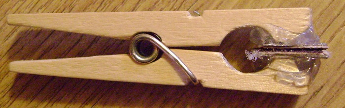
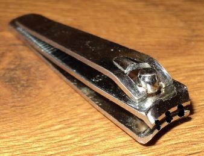
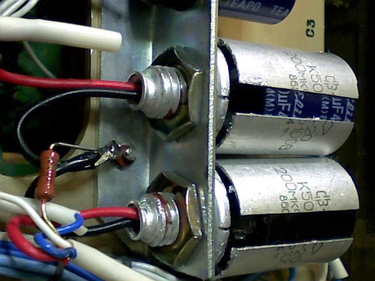
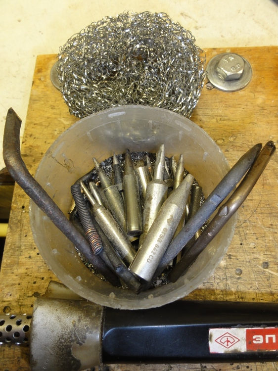
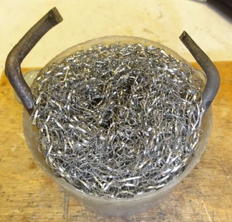
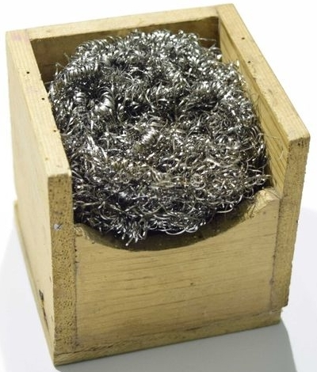

Оснастки для радиолюбителя

Рис. 1 - Инструмент для очистки провода от окислов

Рис. 2 - Инструмент для для удаления изоляции

Рис. 3 - Крепление современных электролитических конденсаторов в корпусе старых



Рис. 4 - Для очистки жала от нагара можно использовать металлическую мочалку для мытья посуды, помещенную в подходящую пластиковую банку, которая одновременно служит контейнером для всех имеющихся жал, - в ней мочалка не елозит по поверхности стола в процессе очистки жала от нагара и вся грязь собирается на донышке.